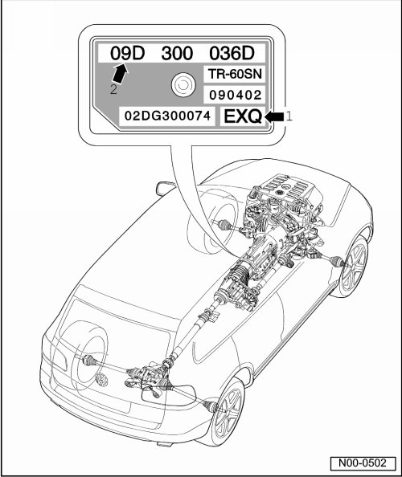

Transmission Identification
Transmission Identification
The Touareg is equipped with the 6 speed automatic transmission 09D All Wheel Drive (AWD). Allocation, refer to --> [ Code and Transmission Allocation, ] Code and Transmission Allocation.
The transmission code letters are shown on the type plate on the lower left of the transmission.
Example

1 Code
2 6 speed automatic transmission 09D AWD
The transmission code is also indicated on the vehicle data stickers.